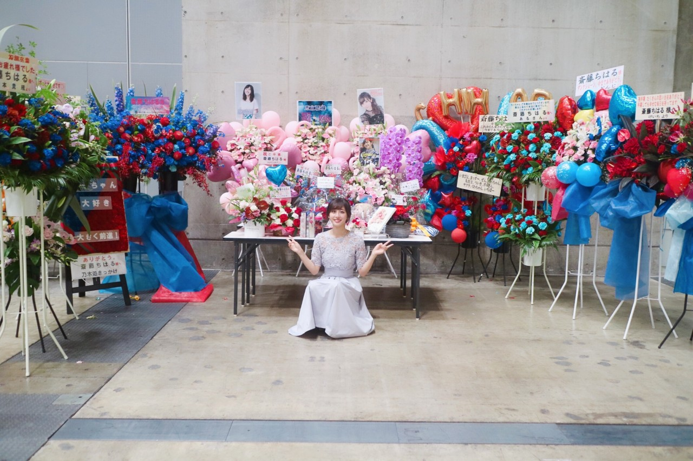
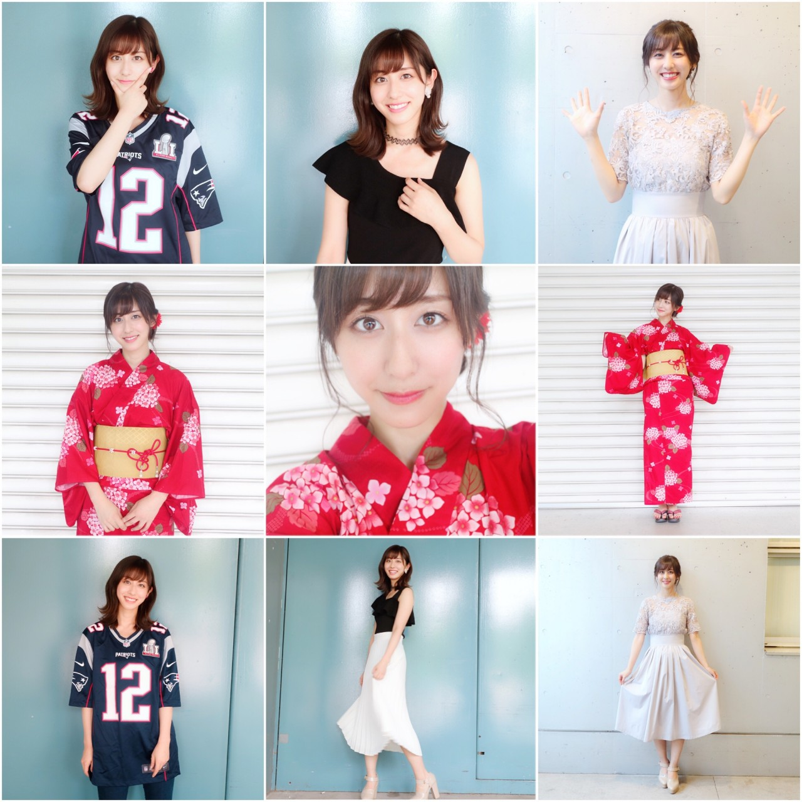
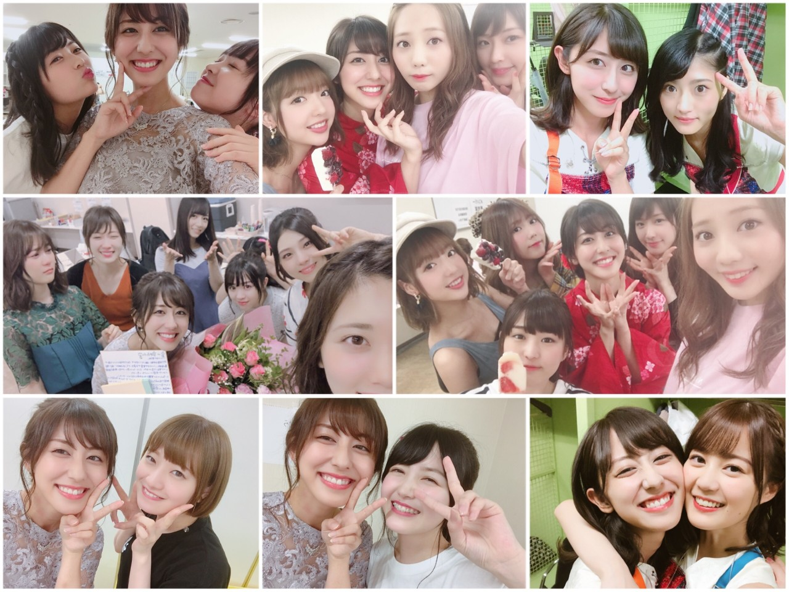
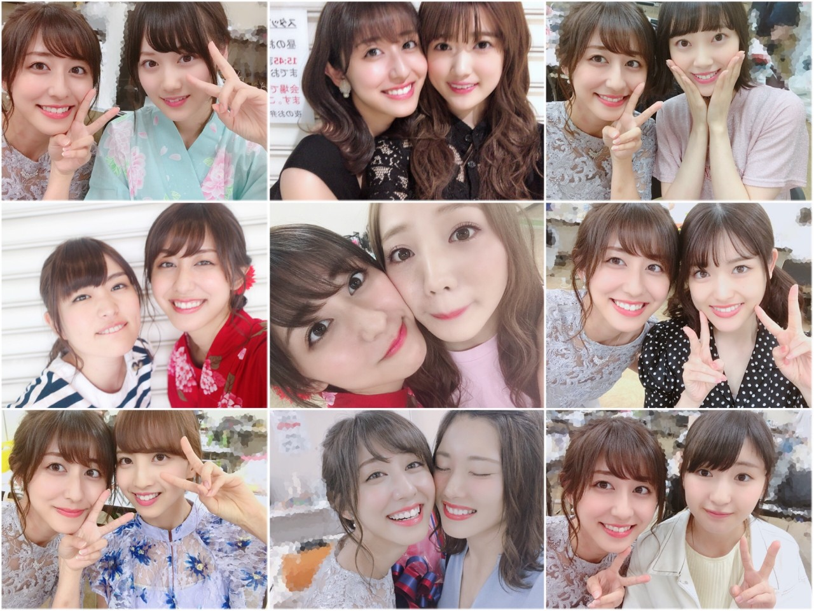
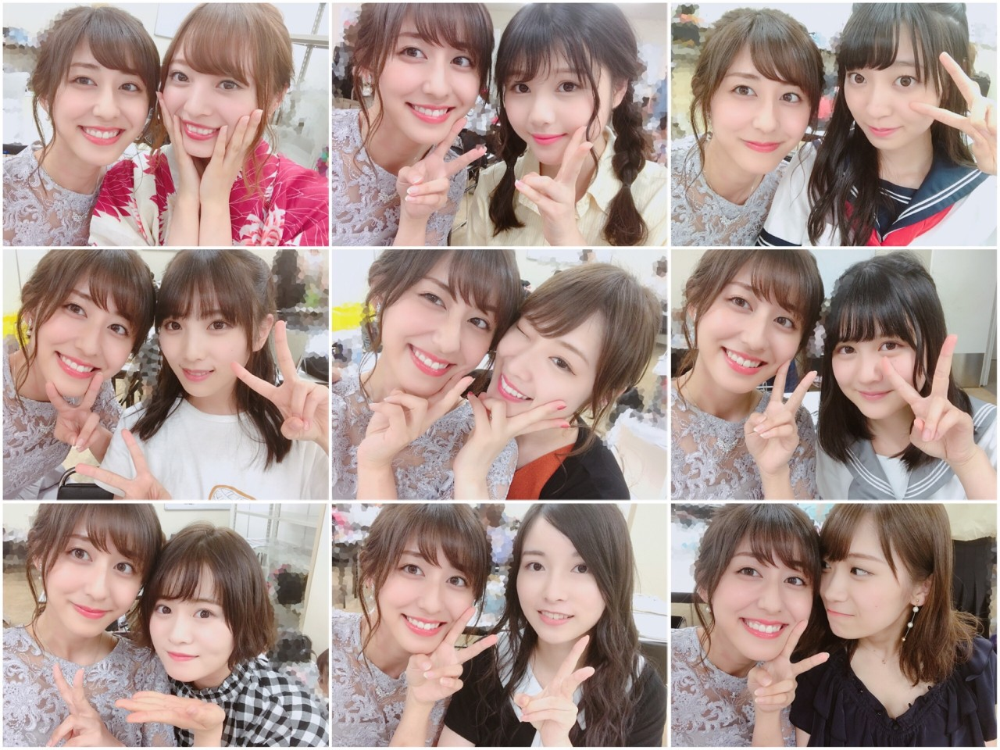

| 2018/07 17 Tue | 乃木坂46ラストブログ |
昨日の個別握手会を以って
私、斎藤ちはるの乃木坂46としての
最後の活動が終了致しました。
7年間本当に本当にありがとうございました。
昨日の個別握手会は皆さんからの愛を
沢山感じました。
私のことを考えて準備してくださったり
メッセージを送ってくださったり
1枚に沢山の思いを込めてくださったり
涙を流してくださったり。
優しく、力強く、涙で、笑顔で
私の背中を押してくださった皆さん。
感謝しかありません。
皆さんのために私はこれからも頑張ります。
立派な姿を見せられるように。

素敵なお花に囲まれて。
幸せだなぁ
そしてレーンの装飾もとても綺麗でした。
わざわざ私のために直前の土日に
公民館を借りて準備してくださったんだって...
その前にも沢山のメッセージを集めたり
イラストをお願いしたり
その全てをアルバムにまとめたり...
本当に大変だっただろうに...
最高のレーンと思い出を作ってくださいました。

大好きな桜と青空とチューリップ。
皆さんの愛を感じます。
幸せ者です。
また昨日は全部の部で服をガラリと変えてみました。
最後だから色んな姿を見せたくて！

1部 私といえばアメフト！ということで
ブレイディのユニフォーム。
お揃いの方が何人かいて嬉しかったなぁ
2部 モノトーンにチョーカー。
私にとって王道コーディネートです
アシンメトリーのトップスがお気に入り！
3部 夏らしく真っ赤な浴衣。
着付けは自分でしてみました！
赤い小物で揃えたのがポイントです〜
5部 ラストということで...
ドレスアップしてみました。
上品なレースが気に入っています。
最後に沢山のメンバーと撮った写真を載せますね

れんか
みりあ
まあや愛未ずー
わか
いくちゃんずーきいみりあ蘭世伊織じゅん
まあや川後かりんずー愛未
花奈
久保ちゃん
いくちゃん

美月
ちま
未央奈
かりん
愛未
まっつん
楓
じゅん
さゆ

美波
りりあ
珠美
与田ちゃん
ずー
れのちゃん
ざき
琴子
真夏
見にくく細かくなっちゃった...
写真一枚一枚載せられなくてごめんね。
撮れなかったメンバーもいて残念だけど
卒業前に一緒に写真が撮れて嬉しかったなぁ
メンバーに出会えて
こんなにも仲良くなれて
本当に嬉しかった。
7年間嬉しいときも楽しいときも
苦しいときも辛いときも
ずっと側にいてくれて
一緒に乗り越えてきた大切な仲間たち。
毎日会えなくなるのは本当に寂しいけど
これからも私たちの関係は変わらずに
ずっとずっと続いていくと思います。
だから大好きなみんな、
これからもずっと宜しくね！！
そして改めてファンの皆さん。
支えてくださって本当にありがとうございました。
皆さんがいてくださったから頑張ることが出来ました。
感謝しかありません。
背中を押してくださった皆さんに
大きな恩返しができるように
これからも私は前を向いて走り続けます。
乃木坂46として活動できて幸せでした。
ありがとうございました。
乃木坂46 斎藤ちはる
コメント(2606)
2018/07/17 23:18